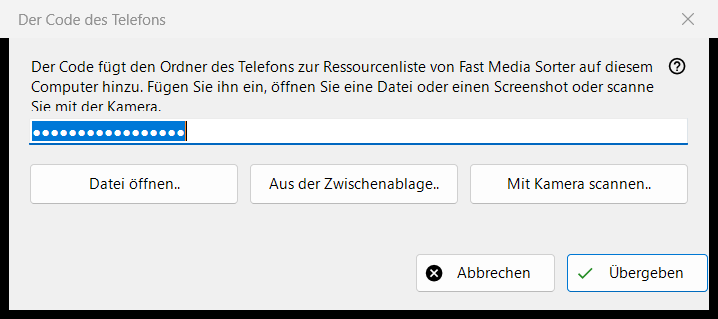
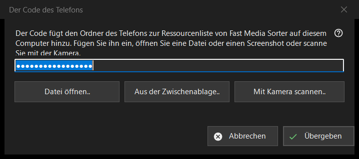

Der Code des Telefons
Verwendungszweck
Empfängt einen von der Telefon-App erzeugten Verbindungscode und gibt ihn an Fast Media Sorter weiter, das den Ordner des Telefons zu seiner Ressourcenliste auf diesem Computer hinzufügt. Das Fenster öffnet sich über die Schaltfläche «Telefoncode..» im Hauptfenster von Share Manager.


In dieser Reihenfolge
- Bringen Sie den Code auf vier Wegen ins Fenster: Tippen oder fügen Sie ihn in das Feld ein, klicken Sie auf «Datei öffnen..», auf «Aus der Zwischenablage..» oder auf «Mit Kamera scannen..».
- Klicken Sie auf «Übergeben».
- Bestätigen Sie das Hinzufügen des Ordners im Fenster von Fast Media Sorter, das erscheint.
Die Elemente
Verbindungscode
Ein einzeiliges Feld, das Punkte statt Zeichen zeigt, weil der Code ein Geheimnis ist; er wird nie in ein Protokoll geschrieben. Klicken Sie bei leerem Feld auf «Übergeben», werden Sie gebeten, den Code einzutippen, einzufügen oder eine Datei oder einen Screenshot zu öffnen.
Datei, Zwischenablage und Kamera
«Datei öffnen..» liest .fmscfg-, .json- und .txt-Dateien sowie QR-Bilder (.png, .jpg, .jpeg, .bmp, .webp); eine Datei lässt sich auch auf das Fenster ziehen. «Aus der Zwischenablage..» liest den Code aus der Zwischenablage. «Mit Kamera scannen..» öffnet das Kamerafenster, und der gescannte Text wird behandelt, als wäre er eingefügt worden.
Übergeben
Der Code wird geprüft und dann an das laufende Fast Media Sorter gesendet, dessen eigener Importdialog weiterhin seine üblichen Fragen stellt. Bei Erfolg lautet der Status «Der Code wurde übergeben: Bestätigen Sie das Hinzufügen im Fenster von Fast Media Sorter.», und dieses Fenster schließt sich. Wird Fast Media Sorter nicht gefunden, ist es eine ältere Version oder antwortet es nicht, wird der Code mit Datenschutzmarkierungen in die Zwischenablage gelegt, und die Statuszeile sagt, ihn über «Aus Zwischenablage importieren» im Ressourcenbereich einzufügen.
Meldungen in der Statuszeile
Ein Dokument, das kein Verbindungscode und keine Ressourceneinstellungsdatei ist, wird als nicht lesbar gemeldet. Bei einer von einer neueren Version erstellten Datei werden Sie gebeten, Fast Media Sorter zu aktualisieren. Hält ein anderes Programm die Zwischenablage, sagt der Status das.
Managereinstellungen · SFTP-Freigabeeinstellungen · Einstellungen des Austauschservers